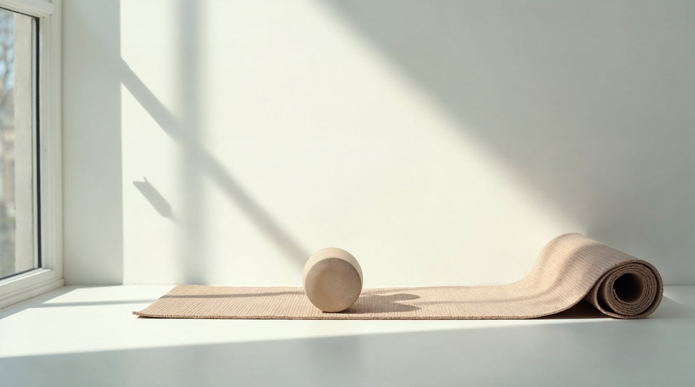
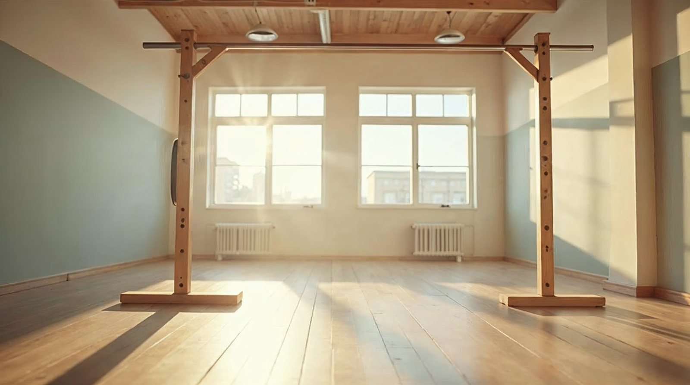
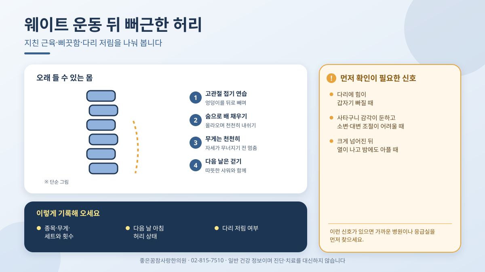

이종호 한의사 감수좋은꿈참사랑한의원 대표원장 (한의사 면허번호 19769)발행 2026-11-26 · 수정 2026-11-26
이 글의 차례
퇴근길에 들른 헬스장, 바벨에 원판을 하나 더 끼웁니다. 지난주보다 조금 무거운 무게로 데드리프트를 마치고 나니 뿌듯함이 밀려옵니다. 그런데 다음 날 아침, 침대에서 일어나려는데 허리 아래가 뻣뻣하게 굳어 양말을 신으려 몸을 숙이기가 겁이 납니다.
데드리프트와 스쿼트는 몸 전체의 힘을 기르는 좋은 운동입니다. 다리와 엉덩이, 등 근육을 한꺼번에 쓰기 때문에 헬스를 꾸준히 하시는 분들은 대부분 이 두 가지를 기본으로 하십니다. 그만큼 허리 불편을 안고 진료실에 오시는 분도 많습니다.
허리가 뻐근한 이유는 사람마다 다릅니다. 열심히 운동해서 근육이 지친 것일 수도 있고, 마지막 한 번을 억지로 들다가 삐끗한 것일 수도 있습니다. 드물게는 허리 안쪽 디스크가 자극을 받아 엉덩이와 다리로 통증이 내려가기도 합니다.
저는 이런 분들께 "어떤 무게로, 몇 번째 들 때, 어떤 느낌이었는지"를 먼저 여쭙니다. 운동하는 순간의 이야기 속에 허리가 무엇 때문에 불편한지를 가늠할 실마리가 들어 있는 경우가 많습니다.
운동 뒤 허리 뻐근함에는 어떤 것들이 있나요?
가장 흔한 것은 허리를 받치는 근육이 많이 쓰여 지친 경우입니다. 데드리프트와 스쿼트는 허리를 곧게 버티는 동안 척추 양옆 근육이 쉬지 않고 일합니다. 운동량이 늘어난 다음 날 허리 양옆이 넓게 뻐근하고, 움직이면 조금씩 풀리는 것이 특징입니다.
두 번째는 허리를 삐끗한 경우입니다. 무거운 무게를 들다 순간 '뜨끔' 하는 느낌이 있었고, 그 뒤로 허리를 숙이거나 펴기가 힘듭니다. 근육이나 인대, 허리뼈 뒤쪽 작은 관절이 갑자기 놀란 상태로, 한쪽으로 몸이 기울어지기도 합니다.
세 번째는 통증이 엉덩이와 허벅지 뒤, 종아리까지 내려가는 경우입니다. 허리 디스크나 신경이 자극을 받았을 때 이런 모양이 나타날 수 있습니다. 허리보다 다리가 더 불편하거나, 기침할 때 다리가 찌릿하다면 이쪽을 먼저 살펴야 합니다.
왜 데드리프트와 스쿼트 뒤에 허리가 아플까요
두 운동 모두 무게를 들고 내릴 때 허리가 중립을 지켜야 합니다. 그런데 무게가 무거워지거나 지치면 바를 바닥에서 떼는 순간 등이 둥글게 말리거나, 스쿼트에서 가장 낮은 자세로 내려갈 때 골반이 말려 들어가며 허리가 꺾이기 쉽습니다.
엉덩이와 허벅지 뒤 근육이 뻣뻣한 분도 허리에 부담이 갑니다. 고관절이 충분히 접히지 않으면 그만큼을 허리가 대신 숙여 채우게 됩니다. 하루 종일 앉아 일하는 분들은 고관절 앞쪽이 짧아지고 엉덩이 근육이 잠들어 있어 이런 일이 흔합니다.
숨을 쉬는 방법과 배에 힘을 주는 방법도 큰 영향을 줍니다. 배 둘레를 단단하게 채우지 못한 채 무게를 들면, 허리를 받쳐 주는 몸통의 기둥이 약해집니다. 반대로 숨을 너무 오래 참고 버티면 머리가 띵하고 어지러울 수 있습니다.
무게를 늘리는 속도도 중요합니다. 근육은 몇 주 만에도 힘이 붙지만, 힘줄과 인대, 관절이 새 무게에 익숙해지는 데는 더 오랜 시간이 걸립니다. 기록을 빨리 올리고 싶은 마음이 앞서면 허리가 따라오지 못하는 순간이 생깁니다.
스쿼트와 데드리프트는 허리를 조금 다르게 씁니다
데드리프트는 바닥에 있는 바를 들어 올리는 동작이라 허리가 앞으로 기울어진 채 버티는 시간이 깁니다. 그래서 바가 바닥에서 떨어지는 순간과 무릎을 지나는 구간에서 허리 아래가 당긴다는 분이 많고, 바가 몸에서 멀어질수록 허리 부담은 커집니다.
스쿼트는 바를 어깨에 얹고 앉았다 일어나는 동작이라, 가장 깊이 앉은 자세에서 골반이 말려 들어가거나 일어날 때 엉덩이가 먼저 솟으며 상체가 숙여지는 순간에 허리가 지치기 쉽습니다. 발목이 뻣뻣한 분은 깊이 앉기 어려워 그만큼을 허리로 채우기도 합니다.
어느 운동에서, 어느 구간에서 불편한지를 나눠 보면 고쳐야 할 곳이 보입니다. 바가 몸에서 멀어지는 습관인지, 고관절이나 발목이 뻣뻣한 것인지, 무게 자체가 버거운 것인지에 따라 해야 할 일이 달라집니다.
앉아 일하는 평일과 운동하는 저녁 사이
진료실에서 보면 운동 자체보다 운동하기 전의 하루가 허리를 결정하는 경우가 많습니다. 아침부터 저녁까지 의자에 앉아 있다 바로 헬스장에 가서 무거운 무게를 들면, 굳어 있던 고관절과 잠들어 있던 엉덩이 근육이 제때 깨어나지 못합니다.
그래서 저는 앉아 일하는 분들께 운동 전 준비 시간을 평소보다 넉넉히 가지시라고 말씀드립니다. 가볍게 자전거를 타며 몸을 데우고, 고관절을 접었다 펴는 동작으로 엉덩이와 허벅지 뒤를 먼저 깨운 뒤 빈 바부터 시작하는 것이 허리를 아끼는 순서입니다.
근육이 지친 것과 삐끗한 것은 어떻게 다른가요
근육이 지친 경우에는 운동 중에 특별한 순간 없이 다음 날 허리 양쪽이 고르게 뻐근합니다. 아침에 뻣뻣하다가 샤워를 하고 몸을 움직이면 한결 나아지는 흐름을 보이고, 대개 이삼일 안에 가라앉습니다.
삐끗한 경우에는 '그때 그 한 번'이 또렷합니다. 운동 직후부터 허리를 펴기 힘들고, 기침이나 재채기에 허리가 울리며, 누웠다 일어나기가 무척 어렵습니다. 아픈 쪽이 한쪽으로 치우쳐 있는 경우가 많습니다.
다리로 내려가는 통증은 허리를 숙이거나 오래 앉아 있을 때 엉덩이와 다리가 더 저리고, 발가락이나 발목 힘이 예전 같지 않은 느낌이 함께 오기도 합니다. 이 경우는 근육통처럼 여기고 운동을 이어 가기보다 먼저 진찰을 받아 보시는 것이 좋습니다.
스스로 먼저 살펴볼 수 있는 것
똑바로 서서 천천히 앞으로 숙여 보세요. 손끝이 어디까지 내려가는지, 숙이는 동안 허리와 다리 가운데 어디가 당기는지 봅니다. 뒤로 젖힐 때 아픈지, 앞으로 숙일 때 아픈지에 따라 살펴볼 곳이 달라집니다.
바닥에 누워 한쪽 다리를 무릎을 편 채 천천히 들어 올려 보세요. 허벅지 뒤가 당기는 정도라면 근육이 뻣뻣한 것에 가깝고, 엉덩이에서 종아리까지 찌릿하게 저림이 내려간다면 신경 쪽 자극을 생각해 볼 수 있습니다.
발뒤꿈치로 걷기와 까치발로 걷기를 몇 걸음씩 해 보는 것도 도움이 됩니다. 한쪽만 유난히 힘이 빠지거나 발이 툭 떨어진다면, 혼자 지켜보기보다 진료를 받아 보시는 것이 좋습니다.

운동을 쉬어야 할까요, 이어 가도 될까요
근육이 지친 정도라면 운동을 완전히 멈출 필요는 없습니다. 무게를 평소의 절반 정도로 낮추고, 허리에 부담이 적은 운동으로 몸을 움직이면 오히려 회복이 빨라질 수 있습니다. 가볍게 걷기, 자전거, 상체 운동 정도는 대개 괜찮습니다.
삐끗한 경우라면 처음 이틀 정도는 무거운 무게를 내려놓고, 아프지 않은 범위 안에서 걷기와 가벼운 움직임만 하세요. 하루 종일 누워 있는 것보다 조금씩 걷는 편이 허리가 굳지 않는 데 도움이 됩니다.
다리 저림이 있거나 통증이 점점 넓어진다면 데드리프트와 스쿼트는 잠시 내려놓고 먼저 진찰을 받으세요. 디스크 문제로 수술이 필요한지는 정형외과나 신경외과에서 판단하는 영역이며, 그 판단에 맞춰 한의원 진료를 함께 계획합니다.
먼저 이렇게 여쭙니다
- 어떤 운동을, 어떤 무게로, 몇 번째 들 때 불편해지셨나요?
- 그 순간 '뜨끔' 하는 느낌이 있었나요, 다음 날 서서히 뻐근해졌나요?
- 엉덩이나 다리로 저림이 내려가나요? 기침할 때 울리나요?
- 최근 무게나 횟수를 늘리셨나요? 운동은 주에 몇 번 하시나요?
- 하루에 앉아 있는 시간은 어느 정도인가요?
- 예전에 허리 디스크 진단이나 허리를 삐끗한 적이 있나요?
트레이너와 운동하고 계시다면 그날의 운동 기록을 보여 주셔도 좋습니다. 세트와 무게, 쉬는 시간이 적힌 기록은 허리가 어디서부터 버거웠는지를 알려 주는 좋은 자료가 됩니다. 운동하는 모습을 옆에서 찍은 짧은 영상이 있다면 등이 말리는 순간을 함께 찾아볼 수 있습니다.
일상에서 먼저 해 볼 수 있는 것
- 운동 전 고관절 접기, 엉덩이 근육 깨우기로 10분 이상 몸 데우기
- 무게는 일주일에 조금씩만, 자세가 무너지기 전에 세트 마치기
- 바를 들기 전 숨을 들이마셔 배 둘레를 채우고, 올라오면서 천천히 내쉬기
- 거울이나 휴대폰 영상으로 등이 말리는 순간이 없는지 확인하기
- 운동 다음 날 허리가 뻐근하면 가볍게 걷고 따뜻하게 샤워하기
- 오래 앉는 날에는 한 시간에 한 번 일어나 허리 펴기
무게를 들 때 허리를 '세우려' 애쓰기보다, 엉덩이를 뒤로 빼며 고관절을 접는 감각을 익히는 것이 먼저입니다. 막대나 빈 바로 거울 앞에서 엉덩이 접기 연습을 하면, 같은 무게에서도 허리 부담이 한결 줄어드는 것을 느끼실 수 있습니다.
허리 근육을 직접 키우는 것도 좋지만, 엉덩이와 복부, 옆구리 근육이 고르게 받쳐 주는 것이 더 중요합니다. 플랭크, 옆 플랭크, 엉덩이 들기 같은 동작을 운동 프로그램 안에 꾸준히 넣어 보세요.
잠도 회복의 일부입니다. 무거운 운동을 한 날은 근육이 밤사이 회복되어야 하는데, 잠이 짧으면 다음 날 허리가 더 무겁게 느껴집니다. 운동하는 날일수록 잠드는 시각을 지켜 주세요.
한의원에서 함께 살필 수 있는 경우
- 운동 뒤 허리 뻐근함이 일주일 넘게 이어지는 경우
- 데드리프트나 스쿼트를 하다 삐끗한 뒤 허리를 펴기 힘든 경우
- 같은 무게에서 자꾸 허리가 먼저 지치는 경우
- 허리와 함께 엉덩이, 허벅지 뒤가 늘 뻣뻣한 경우
- 오래 앉아 일한 날에 운동하면 허리가 더 불편한 경우
좋은꿈참사랑한의원에 오시면 먼저 아래 '먼저 확인이 필요한' 신호가 없는지부터 봅니다. 그다음 맥을 짚고, 허리와 골반, 고관절의 움직임과 다리 저림 여부를 함께 살핍니다. 필요하다고 판단되면 초음파로 근육과 인대 부위를 확인합니다.
진찰한 내용을 바탕으로 침, 약침, 물리치료, 추나 가운데 지금 상태에 맞는 것을 정합니다. 엉덩이 쪽 힘줄 통증이 오래 남았다면 체외충격파를 상의하기도 합니다. 한약을 상의할 때는 드시는 약과 영양제를 확인한 뒤 신중히 정합니다.
언제 다시 무게를 올릴지는 허리 움직임과 통증의 흐름을 보며 함께 정합니다. 정형외과나 신경외과 진료를 받고 계신다면 그 진료와 나란히 가는 것으로 생각해 주시면 됩니다.
이렇게 기록해 오시면 상담이 쉬워집니다
- 운동한 날짜, 종목, 무게, 세트와 횟수
- 운동 중, 직후, 다음 날 아침 허리 상태
- 다리 저림이나 당김이 있었는지
- 앉아 있던 시간과 잠든 시각
- 스트레칭이나 걷기를 한 날 표시
간단한 운동 일지 하나면 충분합니다. 허리가 불편했던 날의 앞뒤를 나란히 놓고 보면, 무게보다 잠이나 앉아 있던 시간이 더 큰 원인이었다는 것을 알게 되는 분도 많습니다.

오래 들 수 있는 몸을 위해
웨이트 운동은 몇 달이 아니라 몇 년을 두고 하는 운동입니다. 오늘 기록 하나를 올리는 것보다, 허리가 편안한 상태로 꾸준히 바벨 앞에 설 수 있는 것이 훨씬 큰 성과입니다.
허리가 한 번 불편했던 분은 다시 무게를 올리는 과정이 조심스러우실 겁니다. 그 마음은 자연스러운 것이고, 오히려 몸을 살피는 좋은 습관이 됩니다. 평소 무게의 절반에서 시작해 자세가 흔들리지 않는 것을 확인하며 몇 주에 걸쳐 돌아가면, 허리도 마음도 함께 무게에 다시 익숙해집니다.
운동을 함께하는 친구나 트레이너에게 허리가 불편했던 일을 미리 말해 두는 것도 좋습니다. 옆에서 자세를 봐 주는 사람이 있으면 지친 마지막 세트에서 무리하는 일을 줄일 수 있습니다.
이번 주에는 운동 전 엉덩이 접기 연습 10회와 운동 뒤 걷기 10분, 이 두 가지를 더해 보세요. 다음에 오시면 허리가 어떻게 달라졌는지 운동 기록과 함께 살펴보겠습니다.
이런 증상은 먼저 확인이 필요합니다
- 다리에 힘이 갑자기 빠지거나 엉덩이·사타구니 감각이 둔해지고 소변이나 대변 조절이 어려운 경우
- 높은 곳에서 떨어지거나 크게 넘어진 뒤 허리 통증이 심하고 열이 나거나 밤에도 계속 아픈 경우
이런 신호가 있으면 한의원보다 가까운 병원이나 응급실을 먼저 찾으세요.
함께 읽으면 좋은 글
- 허리를 삐끗해 움직이기 힘든 급성 요추 염좌는 첫 며칠 어떻게 살피나요?
- 허리 디스크 초기 신호와 다리 저림은 어떻게 구분하나요?
- 허리를 뒤로 젖히거나 돌릴 때 아픈 요추 후관절 증후군은 어떻게 살피나요?
- 운동하고 이틀째에 더 쑤시는 지연성 근육통은 왜 생기고, 회복은 어떻게 살피나요?
- 허리 아래 엉치 한쪽이 콕 찌르듯 아픈 천장관절 통증은 어떻게 살피나요?

여쭙는 것
- 어떤 운동을, 어떤 무게로, 몇 번째 들 때 불편해지셨나요?
- 그 순간 '뜨끔' 하는 느낌이 있었나요, 다음 날 서서히 뻐근해졌나요?
- 엉덩이나 다리로 저림이 내려가나요? 기침할 때 울리나요?
생활에서 해 볼 것
- 운동 전 고관절 접기, 엉덩이 근육 깨우기로 10분 이상 몸 데우기
- 무게는 일주일에 조금씩만, 자세가 무너지기 전에 세트 마치기
- 바를 들기 전 숨을 들이마셔 배 둘레를 채우고, 올라오면서 천천히 내쉬기
한의원에서 함께 살필 것
- 운동 뒤 허리 뻐근함이 일주일 넘게 이어지는 경우
- 데드리프트나 스쿼트를 하다 삐끗한 뒤 허리를 펴기 힘든 경우
- 같은 무게에서 자꾸 허리가 먼저 지치는 경우
먼저 확인이 필요한 신호
- 다리에 힘이 갑자기 빠지거나 엉덩이·사타구니 감각이 둔해지고 소변이나 대변 조절이…
- 높은 곳에서 떨어지거나 크게 넘어진 뒤 허리 통증이 심하고 열이 나거나 밤에도 계속…
한눈에 보는 표
| 구분 | 핵심 |
|---|---|
| 여쭙는 것 | 어떤 운동을, 어떤 무게로, 몇 번째 들 때 불편해지셨나요? 그 순간 '뜨끔' 하는 느낌이 있었나요, 다음 날 서서히 뻐근해졌나요? |
| 생활에서 해 볼 것 | 운동 전 고관절 접기, 엉덩이 근육 깨우기로 10분 이상 몸 데우기 무게는 일주일에 조금씩만, 자세가 무너지기 전에 세트 마치기 |
| 한의원에서 함께 살필 것 | 운동 뒤 허리 뻐근함이 일주일 넘게 이어지는 경우 데드리프트나 스쿼트를 하다 삐끗한 뒤 허리를 펴기 힘든 경우 |
| 먼저 확인이 필요한 신호 | 다리에 힘이 갑자기 빠지거나 엉덩이·사타구니 감각이 둔해지고 소변이나 대변 조절이 어려운 경우 높은 곳에서 떨어지거나 크게 넘어진 뒤 허리 통증이 심하고 열이 나거나 밤에도 계속 아픈 경우 |
자주 묻는 질문
운동 뒤 허리가 뻐근하면 허리 벨트를 차야 하나요?
벨트는 무거운 무게에서 배 둘레를 단단히 하는 데 도움이 될 수 있습니다. 다만 벨트보다 먼저 숨 쉬기와 고관절 접는 자세를 익히는 것이 중요하고, 가벼운 무게에서는 벨트 없이 연습해 보시길 권합니다.
허리가 뻐근한데 스트레칭을 세게 하면 풀리나요?
지친 근육이라면 가벼운 스트레칭과 걷기가 도움이 되지만, 삐끗한 직후 세게 늘리면 오히려 불편이 커질 수 있습니다. 당김이 느껴지기 직전에서 멈추는 정도로 해 주세요.
디스크가 있다는 말을 들었는데 데드리프트를 해도 되나요?
디스크 상태와 증상에 따라 다릅니다. 처방한 선생님과 먼저 상의하시고, 운동을 이어 가더라도 가벼운 무게와 바른 자세부터 다시 시작하시길 권합니다.
운동 다음 날 허리가 아프면 찜질은 어떻게 하나요?
근육이 지친 뻐근함이라면 따뜻한 샤워나 찜질이 편할 수 있습니다. 삐끗한 직후 열감이 있다면 처음 하루이틀은 차가운 찜질을 짧게 해 보세요.
좋은꿈참사랑한의원은 재진 때 지난번 이야기부터 이어서 여쭙니다. 진료시간과 예약은 오시는 길에서 확인하세요.
어디서 상담받을 수 있나요?
좋은꿈참사랑한의원은 서울 동작구 만양로2길 2 신성빌딩 3층·5층(서울 동작구 상도동, 7호선 상도역 3번 출구 근처)에 있습니다. 한의사 3명(이종호 대표원장, 조영기 수석진료원장, 정원영 진료원장)이 진료합니다. 진료시간은 평일 09:30~20:00(점심 13:00~14:00), 토·일·공휴일 09:30~15:00이며, 방문 전 전화로 확인을 권합니다. 예약은 네이버 예약, 카카오톡 상담, 전화 02-815-7510로 받습니다.
이 글은 일반적인 건강 정보이며 개인의 진단이나 치료를 대신하지 않습니다. 증상이 있거나 복용 중인 약이 있다면 진료를 통해 확인하세요. 치료 효과는 개인마다 다를 수 있습니다.
작성 기준: 일반적으로 알려져 있는 건강 정보를 참고해 정리했습니다(대표원장 감수). 증상 기록은 1~2주 동안 하루 1회, 비슷한 시간에 적어 오시면 지난 상태와 비교하기 쉽습니다.